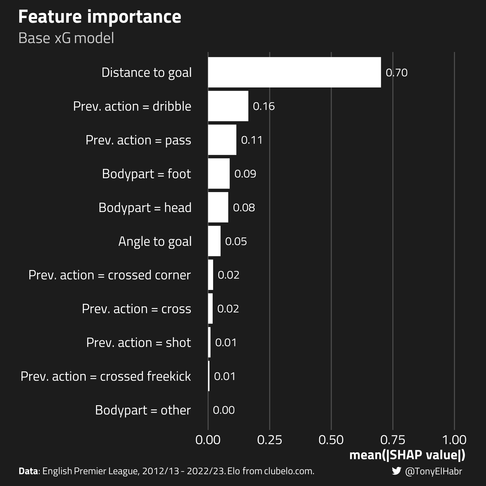
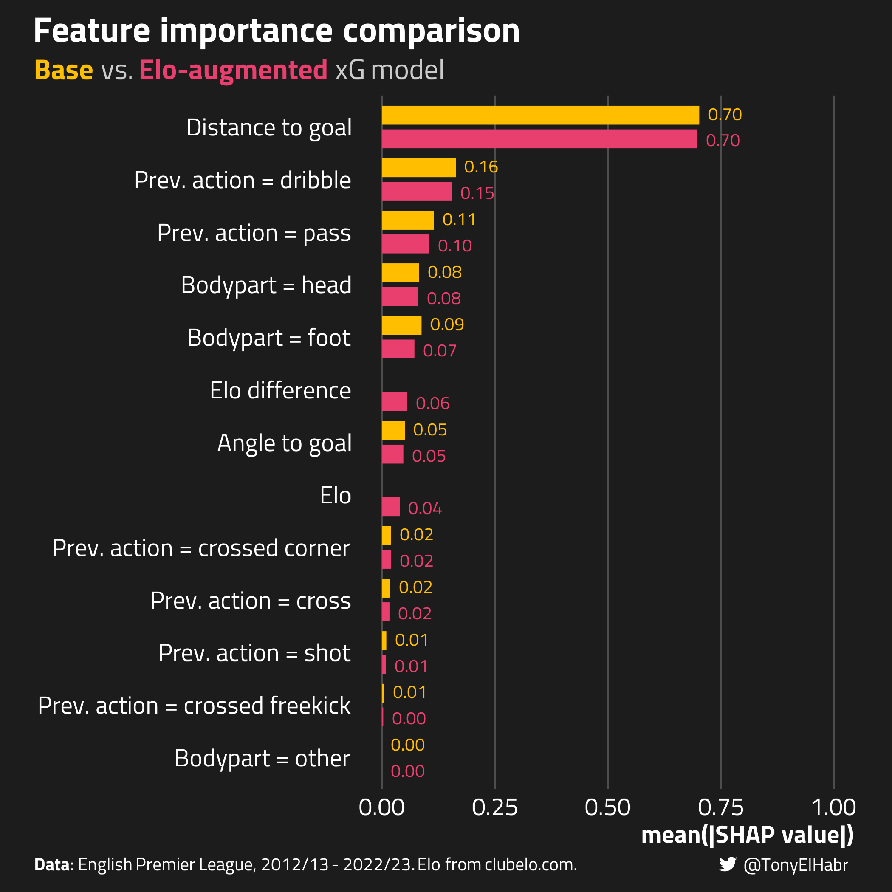

Finnicking around (with an xG model) and finding out
Author
Tony ElHabr
Published
December 29, 2023
Introduction
“Should we account for team quality in an xG model?” From a purely philosophical point of view, my opinion is “no”–I think that xG models should be agnostic to player and team abilities, even if we were to find that accounting for shot-taker or team identity improves the performance of the model.
But I thought it might be fun to entertain the question from a quantitative perspective. If we add features for team strength to an xG model, can we meaningfully improve the model’s overall predictive performance and calibration?
Expected goals (xG) in soccer also suffer from this bias. Lars Maurath has a great deep-dive looking into expected goals under-estimation for strong teams in the Big 5 European leagues. The plot below (copied shamelessly from Lars’ post) shows that a naive xG model consistently under-predicts Barcelona’s goals over the course of the season, for seasons from 2007/08 to 2018/19. Even StatsBomb’s model–which is more sophisticated–tends to underestimate the true cumulative goal total!
Lars does an “ex-post” analysis–evaluating the “residual” of expected goals, or xGD–to arrive at his conclusion that team quality does seem to explain large deviations between goals and expected goals for top teams.
[W]hen conditioning on… team quality (Elo ranking) I do not find this bias in either naive or sophisticated models
I’m curious to see if we can arrive at a related conclusion in a more direct, “ex-ante” fashion. Can we reduce the underestimation of goals for strong teams by directly accounting for team quality in an xG model?
Analysis and Results
Data
I’ll be using event data that I’ve ingested with the {socceraction} package (which I’ve made available here!) for the 2013/14 through 2022/23 EPL seasons. I’ll focus on just “open-play” shots, i.e. shots excluding penalties and those taken from set pieces.
Additionally, I’ve scraped Elo ratings from ClubElo for my measure of team quality. I’ve chosen Elo because it provides an intuitive, sport-agnostic measure of relative skill. Also, it is calculated independent of the events that take place in a game, so any correlation with measures of shot volume, quality, etc. are only coincidental. (It was also fairly easy to retrieve and is what Lars used to gauge “top” teams in a quantitative way.)
Package imports and other setup
## Data retrievallibrary(curl)library(arrow)library(qs) ## local devlibrary(worldfootballR)## Data manipulationlibrary(dplyr)library(tidyr)library(purrr)library(lubridate)library(forcats)## Modelinglibrary(rsample)library(recipes)library(parsnip)library(workflows)library(hardhat)## Model tuninglibrary(tune)library(dials)library(workflowsets)library(finetune)## Model diagnosticslibrary(rlang)library(yardstick)library(SHAPforxgboost)## Plottinglibrary(ggplot2)library(sysfonts)library(showtext)library(ggtext)library(htmltools)library(scales)library(grid)library(glue)library(knitr)PROJ_DIR <-'posts/xg-team-quality'TAG_LABEL <- htmltools::tagList( htmltools::tags$span(htmltools::HTML(enc2utf8("")), style ='font-family:fb'), htmltools::tags$span("@TonyElHabr"),)SUBTITLE_LABEL <-'English Premier League, 2012/13 - 2022/23'PLOT_RESOLUTION <-300WHITISH_FOREGROUND_COLOR <-'white'COMPLEMENTARY_FOREGROUND_COLOR <-'#cbcbcb'# '#f1f1f1'BLACKISH_BACKGROUND_COLOR <-'#1c1c1c'COMPLEMENTARY_BACKGROUND_COLOR <-'#4d4d4d'FONT <-'Titillium Web'sysfonts::font_add_google(FONT, FONT)## https://github.com/tashapiro/tanya-data-viz/blob/main/chatgpt-lensa/chatgpt-lensa.R for twitter logosysfonts::font_add('fb', 'Font Awesome 6 Brands-Regular-400.otf')showtext::showtext_auto()showtext::showtext_opts(dpi = PLOT_RESOLUTION)ggplot2::theme_set(ggplot2::theme_minimal())ggplot2::theme_update(text = ggplot2::element_text(family = FONT),title = ggplot2::element_text(size =20, color = WHITISH_FOREGROUND_COLOR),plot.title = ggtext::element_markdown(face ='bold', size =20, color = WHITISH_FOREGROUND_COLOR),plot.title.position ='plot',plot.subtitle = ggtext::element_markdown(size =16, color = COMPLEMENTARY_FOREGROUND_COLOR),axis.text = ggplot2::element_text(color = WHITISH_FOREGROUND_COLOR, size =14),# axis.title = ggplot2::element_text(size = 14, color = WHITISH_FOREGROUND_COLOR, face = 'bold', hjust = 0.99),axis.title.x = ggtext::element_markdown(size =14, color = WHITISH_FOREGROUND_COLOR, face ='bold', hjust =0.99),axis.title.y = ggtext::element_markdown(size =14, color = WHITISH_FOREGROUND_COLOR, face ='bold', hjust =0.99),axis.line = ggplot2::element_blank(),strip.text = ggplot2::element_text(size =14, color = WHITISH_FOREGROUND_COLOR, face ='bold', hjust =0),legend.position ='top',legend.text = ggplot2::element_text(size =12, color = WHITISH_FOREGROUND_COLOR, face ='plain'),legend.title = ggplot2::element_text(size =12, color = WHITISH_FOREGROUND_COLOR, face ='bold'),panel.grid.major = ggplot2::element_line(color = COMPLEMENTARY_BACKGROUND_COLOR),panel.grid.minor = ggplot2::element_line(color = COMPLEMENTARY_BACKGROUND_COLOR),panel.grid.minor.x = ggplot2::element_blank(),panel.grid.minor.y = ggplot2::element_blank(),plot.margin = ggplot2::margin(10, 20, 10, 20),plot.background = ggplot2::element_rect(fill = BLACKISH_BACKGROUND_COLOR, color = BLACKISH_BACKGROUND_COLOR),plot.caption = ggtext::element_markdown(color = WHITISH_FOREGROUND_COLOR, hjust =0, size =10, face ='plain'),plot.caption.position ='plot',plot.tag = ggtext::element_markdown(size =10, color = WHITISH_FOREGROUND_COLOR, hjust =1),plot.tag.position =c(0.99, 0.01),panel.spacing.x = grid::unit(2, 'lines'),panel.background = ggplot2::element_rect(fill = BLACKISH_BACKGROUND_COLOR, color = BLACKISH_BACKGROUND_COLOR))
It’s worth spotlighting Elo a bit more since it’s the novel feature here. Below is a look at the distribution of pre-match Elo over the course of the entire data set.
To make Elo values feel a bit more tangible, note that:
Man City–arguably the best team in the EPL for the past decade–has sustained an Elo greater than 1850 for a majority of the past decade.
Bottom-table teams often in the relegation battle tend to have Elos less than 1650.
The pre-match difference team Elos follows a normal-ish distribution, with most values falling within the ±300 range.
Model Training
The feature set for our “base” xG model consists of the following:
location of the shot (distance and angle of the shot to the center of the goal mouth)1.
type of action leading to the shot.
body part with which the shot was taken.
These features are essentially what all xG models have in common, although the exact implementation differs. Data providers such as Opta also account for information that is not captured in traditional event data, such as the position of the goalkeeper.
For the team-quality-adjusted (or “Elo-augmented”) model, I’ll add two additional features:
elo: the Elo of the team of the shot-taker.
elo_diff: the difference in the ELO of the shot-taking team and the opposing team.
The former is meant to capture the opponent-agnostic quality of a team, while the latter captures the quality of the team relative to their opponent.
I’ll be using xgboost for my xG models. xgboost is the state-of-the-art framework for tabular machine learning tasks that’s used by data and model providers like Opta. I’ll choose hyperparameters using an efficient grid search, evaluating models with the Brier skill score (BSS). For the reference Brier score for BSS, I’ll use a dummy model that predicts 12% conversion for all shots.2
Brier skill score (BSS)
If this isn’t the first blog post you’ve read of mine, you probably know that I love to use BSS for classification tasks, especially for xG models.
But why BSS? Simply put, Brier scores are known as the best evaluation metric to use for classification tasks where you’re purely interested in probabilities. And BSS goes one step beyond Brier scores, forcing one to contextualize the model evaluation with a reasonable baseline. In the context of xG, BSS helps us directly see whether our fitted model is better than a naive prediction, such as guessing that all shots convert at the observed shot conversion rate.
Keep in mind that a higher BSS is ideal. A perfect model would have a BSS of 1; a model that is no better than a reference model would have a BSS of 0.
For reproducibility, the chosen hyperparameters are as follows.3 By coincidence, the same hyper-parameters are chosen. (Only 50 combinations were evaluated.)
model_type
mtry
min_n
tree_depth
loss_reduction
sample_size
stop_iter
Base
7
17
6
0
0.4641502
50
Elo-augmented
7
17
6
0
0.4641502
50
The number of trees and learning_rate were pre-defined to be 500 and 0.01 respectively.
Fit models on the entire training set after choosing the hyperparameters
We should verify to see that the fitted xG models are behaving as expected. One way of doing so is to look at the importance of the features for model predictions.
In bespoke models (like the Elo-augmented model), feature importance can be enlightening, as it tell us which features are contributing most to the predicted outcomes. For the base model, I know that shot distance should be the most important feature (by far), as this is found to be the most important features in other similar “basic” public xG models, such as this one and this one.
SHAP values quantify the impact of each feature in a predictive model on the model’s output. For a binary classification task like ours, SHAP values are expressed on a 0-1 scale.
A SHAP value of 0.9 for a specific feature in a binary classification model doesn’t mean that the feature contributes 90% to the prediction, nor does it directly imply that the predicted probability is 90%. Instead, it indicates that this particular feature contributes a value of 0.9 to the shift from the baseline prediction (usually the average of the training data’s output) to the specific model output for that observation.

Indeed, we find that shot distance is the most important feature by far with the base xG model.
Now, if we make the same plot and add the aggregate SHAP values for our Elo-augmented xG model, we see that Elo and Elo difference terms are in the middle of the pack in terms of feature importance. That’s pretty interesting. That indicates that these features aren’t super influential, on average.

Further, we can verify that the Elo-augmented model predicts xG in a manner that matches intuition using SHAP dependence plots. We should see that the SHAP values are higher when Elo is higher and when Elo difference is higher.4
Indeed, this is generally what we observe, although the relationships aren’t quite monotonic, as I would have expected.5
Model Evaluation
So aggregate SHAP values indicate that our two Elo features aren’t playing a big role in contributing to model predictions, although the features do indeed contribute in the way that we’d expect. But SHAP values are just telling us about how and why a model makes certain predictions. What about the performance of the Elo-augmented model compared to the base xG model?
Model Type
Brier Skill Score
Base
0.1058
Elo-augmented
0.1056
Well, at least in terms of BSS, it looks like there’s basically no difference between the models.6
But that’s just one, holistic measure. How well-calibrated is the Elo-augmented model compared to the traditional xG model? Does the augmented model demonstrate better performance across the whole range of shot conversion probabilities?
Visually, I wouldn’t say there’s any significant difference between the calibration curves. A plot of calibration given various buckets for Elo difference would lead to the same conclusion–the Elo-augmented model isn’t notably more calibrated.
Discussion
We’ve seen that there is no clear evidence that accounting for team quality improves an xG model. Sure, it can provide value to an xG model–as shown with the SHAP plots for the Elo-augmented model–but it’s effectively just providing a different kind of information that could be otherwise captured by other traditional xG features.
So naturally one may ask–what about player quality? Or goalkeeper quality? What if we get more specific about the measures of quality (more specific than the team strength)?
While I do think those would be a little more useful in terms of making a better xG model, the better question is whether we should be accounting for these kinds of “quality” features at all. say “no”–although I do think it’s fine for NFL EP models–due to the manner in which xG models are typically applied.
Application of xG in soccer vs. EP in American football
Unlike a fourth-down model actively used by NFL coaches to make real-time decisions, an expected goals (xG) model in soccer serves a more passive role. Soccer players lack the luxury of time that NFL coaches have to calculate xG on the fly when deciding whether to take a shot. Instead, xG feels better suited as a retrospective, descriptive measure of actions that have already occurred.
Further, one can make the argument that incorporating team or player quality into an xG model can make interpretation more difficult, at least in the manner that we typically use xG to contextualize a game or a season. (xGods, please forgive me for looking at single-game xG.) As an extreme example, let’s say that we add an “Is Messi?” feature to an xG model (not unlike what Ryan suggested with Justin Tucker in his presentation) to achieve a slightly more accurate xG model. That’s all fine and dandy, in theory; but then your game- and season-level xG insights would need to change.
I may look at an Inter Miami game where they “lost” on actual goals, let’s say 2 to 1, and “lost” on xG, let’s say 0.9 to 1.7, and think “Oh, that’s a fair result”. But if Messi took 4 shots and we’re using an expected goals model with the “Is Messi?” feature, the Inter Miami xG might appear to be 2.2, perhaps leading to a different take on the game—“that was Inter Miami’s game, but they failed to convert on some key chances”.
Overall, I’d say that it feels circular (and “wrong”) to build in “quality” features into a model used to evaluate shot quality, and, downstream, player and team quality, at least in the current paradigm of soccer analytics.
In favor of team and/or player quality features
On the other hand, I do see the argument in favor of identity features in xG models, e.g. a RAPM-esque xG model. Such indicator variables allow us to estimate player and team impact directly, as well as the uncertainty for those individual estimates. Assuming the model estimation procedure is sound, a direct estimate of player or team skill is better than relying on the “residual” of goals minus xG, as is typically done.
Further, I’ve been assuming that looking at xGD will always be the primary way that xG is used to evaluate players. If we can reliably estimate player skill directly with an xG model and can tease out how that effect changes over time, then perhaps we should prefer these kinds of estimates.
Conclusion
I pursued a quantitative analysis to evaluate whether accounting for team strength directly in an expected goals model in soccer might improve predictiveness and calibration, inspired by observed biases in American football’s expected points models. Despite SHAP plots indicating some value in Elo-augmented models, the overall performance metrics and calibration plots showed negligible differences compared to the base xG model.
On the surface, this is a little at odds with Lars Maurath’s ex-post finding that team quality is useful for explaining xGD, which matches my intuition. However, my ex-ante approach is fairly straightforward and has limitations. Perhaps with better feature engineering and additional features like goalkeeper position, we might find that accounting for team quality directly does improve an xG model.
The most natural area of future research would be to analyze how measures of player quality might improve an xG model. There is some prior art on this, so it would be wise to identify how one could contribute something novel to that work.
No matching items
Footnotes
One might get a slightly more performant by adding the x and y coordinates of the shot–to implicitly account for right-footed bias, for example–but I actually prefer not to add those in the model. Such terms can result in slight over-fitting, in the presence of other features that provide information about the location of the shot, such as distance and angle. (This is the classical “bias-variance” trade-off.)↩︎
12% is approximately the observed shot conversion rate in the whole data set.↩︎
This post isn’t meant to be so much about the why’s and how’s of model tuning and training, so I’ve spared commentary on the code.↩︎
Partial dependence plots aren’t quite the gold standard for model interpretability, but I find them useful for getting a sense of the orientation and magnitude of a feature’s effect, particularly for non-linear modeling techniques like gradient boosting.↩︎
Of course, I could have forced the xgboost model with the Elo terms to have monotonic behavior for those features. I intentionally didn’t do that here so as to not confirm my own biases–that higher xG should generally correspond with higher Elo.↩︎
One could run a bootstrap analysis to prove this with more statistical rigor, but I’ll leave that as an exercise for the eager reader.↩︎